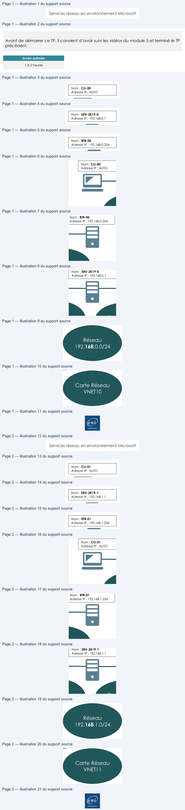

Transcription du document du Drive TSSR. La mise en forme est adaptée au Web ; les compléments IA du portail sont présentés séparément.
Services réseau en environnement Microsoft
TP du Module 05 – Le service DHCP
Avant de démarrer ce TP, il convient d’avoir suivi les vidéos du module 5 et terminé le TP
précédent.
Durée estimée
1 à 2 heures
Prérequis :
•
Avoir réalisé le TP précédent du Module 04.
•
Avoir les deux machines virtuelles RTR-00 et RTR-01.
Pouvoir distribuer des adresses IP dans un autre domaine de diffusion.
Nom : RTR-00
Adresse IP : 192.168.0.254
Nom : CLI-00
Adresse IP : AUTO
Nom : SRV-2K19-0
Adresse IP : 192.168.0.1
Carte Réseau
Réseau
192.168.0.0/24
VNET10
•
Paramétrer le serveur d’un domaine de diffusion pour fournir des adresses IP à
plusieurs domaines de diffusion.
•
Créer sur le serveur SRV-2K19-0 une étendue DHCP pour fournir des adresses IP dans
le domaine de diffusion du serveur.
•
Créer également une étendue pour le second domaine de diffusion hébergé sur le
routeur RTR-01.
Page 1/2
© ENI – Tous droits réservés
BE
RS
2,
Services réseau en environnement Microsoft
•
Faire la même opération sur le second réseau.
o Faire la mise en place d’un client en adressage automatique. o Faire la mise en place d’un serveur Windows. o Configurer deux étendues DHCP sur le serveur afin de pouvoir fournir
Nom : RTR-01
Adresse IP : 192.168.1.254
Nom : CLI-01
Adresse IP : AUTO
Nom : SRV-2K19-1
Adresse IP : 192.168.1.1
des adresses IP dans les deux domaines de diffusion.
Carte Réseau
Réseau
192.168.1.0/24
VNET11
•
Tester le bon fonctionnement.
o Vérifier l’obtention d’une adresse IP sur les postes clients de chaque réseau. o Tester la connectivité entre les clients de chaque réseau.
•
Mettre en place un service de relai DHCP sur les routeurs de chaque domaine de
diffusion afin de pallier la défaillance d’un serveur DHCP.
o Arrêter l’un des deux serveurs DHCP et vérifier l’obtention et la connectivité
des postes clients.
Page 2/2
© ENI – Tous droits réservés
D
RS
ES
